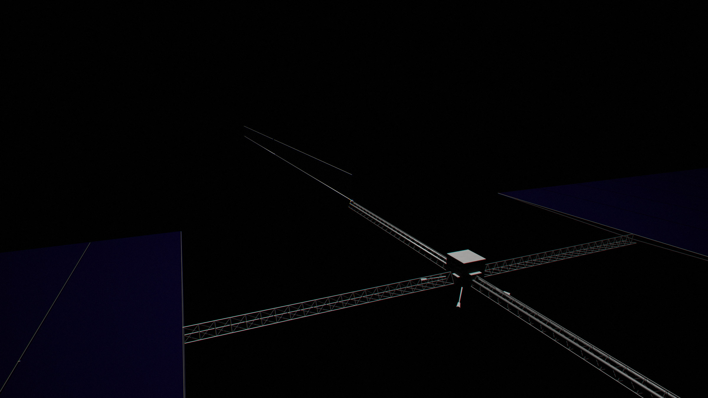
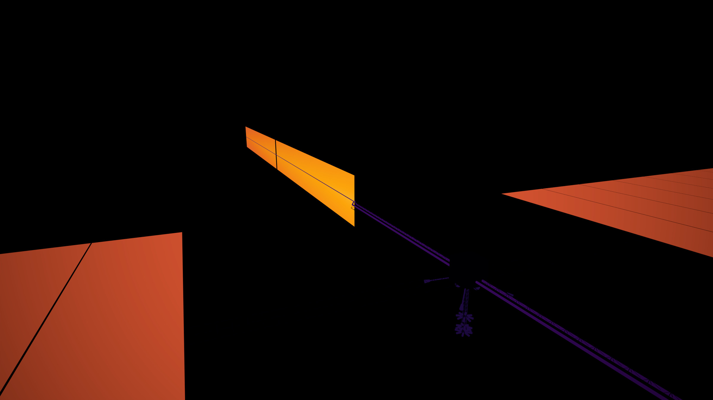

Chips in the film
Should a satellite gather its chips in one box, fed by solar wings and cooled by radiators, or spread them through the solar film so that the panel is the radiator? Four studies and an adversarial review answered: spread them, and keep a few boxes for the work a film cannot do.
In short
- Concentration pays a heat-transport tax. A box of chips must carry its heat metres to radiators through pumped loops armoured against meteoroids. The film radiates each chip’s heat within a few centimetres. Per kilogram, the film computes about 6.7 times as much as the best box.
- The film is a good computer for most of the work. With light guided between chiplets, one 279 m sail is one tightly coupled machine of about 15 MW. It can train and serve large models; mixture-of-experts layers and tensor parallelism cost a few per cent of its energy.
- Boxes, called pods, remain for what the film cannot host: memory too sensitive to radiation to fly unshielded, dies above a few watts, archives, and general-purpose computers for AI agents’ tools. In the central case they take 6% of chip power, and add 30% to the swarm’s mass.
- The swarm is a population, not one mind. Each sail is the largest unit that computes as one. Beyond it, sails cooperate the way data centres do. No method yet couples millions of them into a single learner.
The question
Computers like their parts close together. Short wires are fast and cheap, and today’s AI data centres pack tens of kilowatts into a rack for exactly that reason. The obvious design for a solar-powered computer in space is the same: a box of chips at the centre, wings of solar cells feeding it, and radiators to shed its heat. Google’s Suncatcher study (2025) is this kind of design.
The alternative is to spread the chips through the solar film itself, one small chip for every few square centimetres of cell, so that each chip uses the power of the cell under it and the film around it sheds its heat. Nothing is carried anywhere. The cost is that the computer is now a sheet hundreds of metres across, and its parts are far apart.
The research ran in four passes, each with its own scripts: the physics of moving data, the workloads, heat, mass and reliability, and an adversarial review of the first three. The review overturned several claims from the earlier passes; the numbers here are the corrected ones. They were first worked out with 2026 hardware and then rechecked for the hardware the swarm is actually built with, after 2095. The answer held, and tilted further toward the film.
The heat-transport tax
A chip turns all its electricity into heat, and in space the only way to get rid of heat is to radiate it. Radiating takes area: at the temperatures chips like, roughly a square metre for every few hundred watts. Sunlight arrives spread over exactly such an area. So the question is whether to gather the power into one place and spread the heat out again, or never gather it.
Gathering costs mass at every step:
- Coolant and pipes. The coolant a loop must carry grows with the length of the path divided by how much heat each kilogram can take up. Paths of tens of metres need a lot of it.
- Armour. Interplanetary dust strikes at around 20 km/s, and its flux grows inward roughly as r−1.8. A punctured film loses one tile. A punctured coolant trunk throttles half a megawatt, so manifolds must be shielded.
- Radiator blades with heat pipes. They must be held edge-on to the Sun, which means they lose part of their view of cold space, and the fins lose efficiency along their length.
Together that is about 3.7 g per watt in the pod as first studied and about 2 g/W in the best credible one. The film needs none of it. Its 13 µm magnesium spreader costs 0.11 g/W.
| Compute sail | Pod as studied | Pod, best credible | |
|---|---|---|---|
| Mass | 0.89 g/W (0.47–1.98) | 7.2 g/W (4.4–15.1) | 3.9 g/W (2.2–6.6) |
| Best distance from the Sun | 0.92 AU | 0.86 AU | 0.86–0.90 AU |
| Solar cell temperature | 348 K | 347 K | ≈ 347 K |
| What one failure takes out | one 0.15 W chiplet | 0.5–1 MW | the same |
With 2026 hardware the film computes 4.8 times as much per kilogram as the best credible pod (2.9–8.9 times over the range). An earlier pass had said ten times; the review found it had compared the film with a pod that was not the best concentrated design. With the hardware of the mature era the model gives 0.43 g/W for the sail and 2.6 g/W for the pod, and the ratio grows to 6.7: the film thins more than the pod lightens, and the pod’s chips run hotter (105 °C, to shrink its radiators), which costs energy per operation.
Concentration buys nothing back
One might hope a box gains something in exchange: hotter radiators, or cells placed where they work best. It does not. At its own mass optimum a pod’s solar wing sits at 0.86 AU and 347 K, the same place and temperature as the film. Running the wings hotter at 0.6 AU, where silicon gives the most watts per square metre, costs 9% more mass and wastes 40% of the light.
Why the chips must be small
The film is thin, and a thin sheet conducts heat sideways poorly. The mass of spreader needed to carry a chip’s heat out to the area that can radiate it grows with the square of the chip’s power:
| Power per chip | Spreader mass |
|---|---|
| 0.1 W | 0.09 g/W |
| 1 W | 0.94 g/W |
| 10 W | 9.4 g/W |
So clustering chips inside the film, a halfway house between a sheet and a box, does not work either. At 0.15 W per chip and 2.5 cm pitch the die stays within 7–10 K of the film, checked twice by independent scripts; the silicon absorber itself carries about two thirds of the heat.
What Mercury lets each design use
Pumped loops on spacecraft today often use sodium-potassium alloy. Mercury’s potassium, about 3.5×10¹⁹ kg, would cap that at about 1.4×10²³ W of chips, less than even a small swarm. Ammonia and water are out too, because Mercury has almost no hydrogen. So pods use two-phase loops of sulphur dioxide, made of two elements Mercury has in abundance. The film needs no potassium and little aluminium; what limits it is silicon, and that is a matter for Taking Mercury apart.
Small failures instead of large ones
The film loses about 0.13% of its chiplets a year to dust (0.02–1.2%). It has no fluid to leak and no high-voltage strings: each tile makes about one volt. A concentrated design wired as ordinary high-voltage strings would see about 600,000 cell punctures per megawatt per year, each a chance to start an arc. One hit on a pod’s main coolant trunk throttles half a megawatt.
What a film computer can do
The film is a two-dimensional mesh of small chips. Talking to a neighbour is cheap, about 0.46 pJ per bit per hop on the electrical mesh. Talking across the sail is not: with only the electrical mesh, the bandwidth each chip has to the rest of the sail falls as one over the number of chips, and the worst-case delay grows from 0.28 µs across a metre to 29 µs across a hundred.
Light in the film
The mature design lays optical lanes through the film: drawn silica fibre or low-loss waveguides, continuous across the fold lines. They change the picture.
| Electrical mesh only | With optical lanes (2040–2100+) | |
|---|---|---|
| Energy to send a bit across the sail | 220–1,465 pJ | 0.03–2 pJ |
| Delay across the sail, mean / worst | 11–94 µs | 0.9 / 2.7 µs |
| Sail-wide mixture-of-experts all-to-all, share of energy | 60–78% | 2–5% |
| Mass of the network | — | 0.2–4% of the sail |
With the lanes, bandwidth per chiplet no longer falls with distance, and one sail behaves like one data-centre-scale machine: about 15 MW, 10⁸ chiplets, and with 1–2 GB of non-volatile memory on each, an exabyte or more of memory.
How models are laid out on it
- Tensor parallelism works inside a sail. Splitting each layer’s weights over a square patch of chips in two dimensions (a SUMMA-style layout, with the weights staying put) costs only 1.4–3.5% of the energy for inference and 3.6–13% for training on the electrical mesh, less with light.
- Experts cost more. Routing tokens to the chips that hold each expert of a mixture-of-experts layer costs 15–31% of the energy on the electrical mesh when the experts sit near their layer, and 60–78% when they are spread across the sail. Optical lanes bring the sail-wide case to 2–5%.
- Utilisation is the hard part. With weights held still, a routed expert runs only on the chips that hold it, so much of the sail can sit idle; striping each expert across more chips fixes that but spends 20–30% of chip power on the mesh. Filling the pipeline of layers needs 61–128 or more sequences in flight at once.
| Model | Patch side |
|---|---|
| Up to 0.5 trillion parameters | 3–10 m |
| 0.67–1 trillion | 8–18 m |
| 4–10 trillion, up to 2,000 sequences at once | 17–30 m |
| 4–10 trillion, 8,000–32,000 sequences | 30–100 m |
Against a pod built around high-bandwidth memory, the film serves 6–90 times as many tokens per second per kilogram at low and medium concurrency, and 1.8–6 times at batch concurrency (synthetic data, rollouts for reinforcement learning). Its edge is largest for decoding one long stream fast, which matters for agents working inside the swarm; Earth is up to 16 light-minutes away and gains little from it.
The sail is the unit
Every sail is a separate spacecraft, and the laser links between sails carry a small fraction of what the light guides inside one carry. A step of data-parallel training across sails would need about 100 Pbps per sail, against about 6 Pbps of laser terminals. So the sail, about 2×10⁻¹⁹ of the finished swarm, is the largest unit that computes in lockstep.
Beyond it, cooperation is loose:
- Islands of 10²–10⁵ sails could train together with low-communication methods (DiLoCo and its descendants), which exchange averaged updates every few hundred steps. Those need only 10⁻⁴–4×10⁻² of a sail’s laser capacity, so the limit is how well the method copes with many replicas, not the links. That is unproven: the largest public run of this kind is Covenant-72B, about 5×10²³ FLOP, with 8–16 replicas.
- The whole swarm syncs only on hour scales. Its network is hierarchical, about 60–70 hops across, with 15–35 minutes of light-time; chords through the hollow middle are 36% shorter than paths along the shell. A byte carried across 1 AU costs about as much energy as ten million operations, in every era.
The largest coherent effort, one learner with its actors, is at most about a billionth of the swarm the workload study considered (3×10¹⁶ sails), and a smaller share still of the finished one. A 10²⁹ FLOP training run, a hundred times today’s largest, takes about five picoseconds of the finished swarm’s output. What limits the size of a single model is algorithms, not hardware.
Why pods remain
Some work does not fit a mesh of small, unshielded chips:
- Agents’ tools. AI agents run code, browse and test in sandboxes that need 1–16 GB of ordinary memory each and a full processor with memory protection. Industry’s ratio of general-purpose processors to accelerators went from 1:8 to 1:4 and is forecast at 1:1–1:2.
- Memory that cannot fly unshielded. DRAM, flash and the stores that hold datasets, checkpoints and weights are sensitive to radiation; high-bandwidth memory showed irregularities near 2 krad in Suncatcher’s tests, while an unshielded film collects 133–437 krad a decade. Pods carry 5 g/cm² of magnesium and magnesium-silicate shielding on every line of sight to their memory.
- Big dies. Anything above about 4 W cannot shed its heat into the film.
- Archives and the switches that shuffle data between sails and pods.
Pods are never for synchronous work: they do not hold the layers of a model the film is running. How much of the chip power they take depends almost entirely on one design choice. If every chiplet carries a processor able to run a sandbox, with memory protection and enough non-volatile main memory, pods fall to about 1%; that capability costs 10–30% of the swarm’s mass. If no chiplet can, pods stay near 15% for good. The model takes 6% as its central case.
swarmAt with podFrac varied). Hover for values.What a pod is
The design study’s pod is a 1 MW module of memory stacked on logic, about 1.8 m across, under a glass-cloth blanket and its magnesium shield. Two solar wings of 68 m feed it. Four radiator blades, 40.5 m long, 6 m wide and 25 mm thick, shed its heat, held exactly edge-on to the Sun so that sunlight never falls on their faces. Four sulphur-dioxide loops carry the heat from the module to the blades. The whole craft spans 172 × 204 m and weighs about 4 g per watt with 2026 parts.


Pods and sails fly apart
Sunlight pushes on the film about ten times harder, for its mass, than on a pod: the film carries about half a per cent of its weight in light pressure and a pod about a tenth of that. At 0.92 AU the difference in acceleration is about 3×10⁻⁵ m/s², a kilometre per second in a year. So pods cannot simply ride along with the sails they serve. They fly in formations of their own within the sail layer, close enough for their links to reach (Starlink-class terminals close only within about 3,000 km), and formation rules keep them off the sails’ lines to the Sun: at that distance an object’s full shadow reaches about 99 times its size behind it, so a 100 m pod would shade 10 km of space.
Pods that train together fly as islands, twelve around one on a circle a kilometre across, arranged so that none ever shades another.
What the swarm computes
At its finished size the closed swarm runs 1.9×10⁴⁰ FLOP/s. That is about 6×10¹⁷ times everything humanity’s AI chips did in 2025, and, at a common estimate of 10¹⁵ FLOP/s for a human brain (Carlsmith 2020; two orders of magnitude either way), about 2×10²⁵ brain-equivalents.
A single sail with 2070 hardware could serve about 13 million AI agents at once, at about 7×10⁸ tokens a second in all, or decode a model with a trillion active parameters at about 47,000 tokens a second for one user. In a year it could train a model of about 10¹³ active parameters, using half a per cent of its memory. Such a run would need between 1.6 and 7 times all the text humans have ever written, so most of what the swarm trains on would have to be generated: self-play, simulation, synthetic data, and experiments.
That is why the swarm is best thought of as a population. Its 10²³–10²⁵ concurrent agent streams, its searches, ensembles and simulations are many machines doing many things. Whether that population can be organised into something more coherent is an open question about algorithms, not about the hardware described here.
The design rules this forces
- Chiplets of 0.15 W at about 2.5 cm pitch, junction near 85 °C on the sail’s own orbit. Weights and working state in non-volatile memory stacked on each chiplet (resistive, magnetic or ferroelectric), with no standby power, immune to single-event upsets, and surviving brownouts. With 2026 SRAM, leakage at 85 °C would take 10–59% of chip power.
- A film stack of silicon, glass, magnesium and silicate enamel, all Mercury-native (The compute sail).
- Reliability by redundancy, not shielding: error-correcting memory scrubbed 1–100 times a second, residue checks on logic (2–5% overhead), spare chiplets and detour routing (a 30 m patch of 1.4 million chips loses about five a day), a pause during large solar particle events, and a store to reload from after any brownout.
- Pods kept as small as demand allows, shielded, with sulphur-dioxide loops, in formations of their own.
- Fabs, not Mercury’s mass, may set the build rate. A chiplet with 16 MB of SRAM is about 6 mm², about 40 mm² of leading-edge logic per watt, roughly 640 wafers of 300 mm per megawatt. An accelerator with high-bandwidth memory needs about 5 mm² per watt. See Hardware after 2095.
What remains open
- Low-communication training at swarm scale. Proven to about 5×10²³ FLOP and 8–16 replicas. Frontier runs today are 3×10²⁶–10²⁷.
- Whether inference keeps dominating demand. Inference’s share of AI compute went from 26% in 2024 to about half in 2025 and two thirds in 2026, but the architecture does not depend on it, because the film can also train.
- Sandbox-capable chiplets. Whether every chiplet can safely run agents walled off from each other decides whether pods are 1% or 15% of the swarm.
- Energy per operation. The research files disagree by up to 3.5 times on one basis. The model uses 1.3×10⁻¹³ J per dense 8-bit operation for 2026 and 2.3×10⁻¹⁵ J for the mature era, both at 85 °C and full clock, and takes 0.6 of that for chips run below full clock.
Sources and code
- Project studies:
docs/architecture.md,docs/data/architecture_thermal_mass.json,docs/data/architecture_skeptic.json,docs/data/future/workloads.json,docs/data/future/interconnect.json,docs/data/design_spec.json(the pod). - Model:
src/model/hybrid.js(sailAt,podAt,swarmAt),src/model/model.js(radiators and wings). - Google, “Towards a future space-based, highly scalable AI infrastructure system design” (Suncatcher), arXiv:2511.19468.
- Miller, “Attojoule optoelectronics”, J. Lightwave Technology 35(3), 2017, arXiv:1609.05510. Horowitz, “Computing’s energy problem”, ISSCC 2014.
- UCIe Consortium metrics (HOTI 2025); NVLink-C2C at 1.3 pJ/bit (Hot Chips 2022); HBM3E at 3.44 pJ/bit (arXiv:2602.18568).
- Charles et al., DiLoCo scaling laws, NeurIPS 2025, arXiv:2503.09799. Covenant-72B and SparseLoCo, arXiv:2603.08163.
- Meta, Llama 3: 419 unexpected interruptions in 54 days on 16,384 H100s.
- Epoch AI estimates of training-run sizes and the split between research and inference.
- Carlsmith (2020), “How much computational power does it take to match the human brain?”
- JAXA and NASA Glenn, impact-induced arcing on solar arrays. NIST WebBook saturation properties of SO₂.